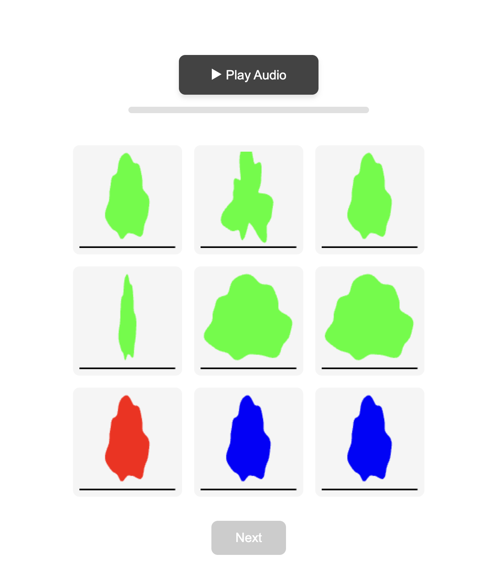

<!DOCTYPE html>
<html>
<head>
    <meta charset="UTF-8">
    <title>Audio-Amoeba Matching Experiment</title>
    <script src="https://unpkg.com/jspsych@7.3.4"></script>
    <script src="https://unpkg.com/@jspsych/plugin-html-keyboard-response@1.1.3"></script>
    <script src="https://unpkg.com/@jspsych/plugin-html-button-response@1.1.3"></script>
    <script src="https://unpkg.com/@jspsych/plugin-fullscreen@1.2"></script>
    <link href="https://unpkg.com/jspsych@7.3.4/css/jspsych.css" rel="stylesheet" type="text/css" />
    <script src="js/utils/lodash.js"></script>
    <script src="js/game_settings.js"></script>
    <script src="amoeba-renderer.js"></script>
    <script src="jspsych-audio-amoeba-match.js"></script>
    <script src="demoTrial.json"></script>
</head>
<body>
    <script>
        // List of all trial data files
        const trialFiles = [
        'A-musical.json',
        'A-referential.json',
        'B-musical.json',
        'B-referential.json',
        'C-musical.json',
        'C-referential.json',
        'D-musical.json',
        'D-referential.json',
        'E-musical.json',
        'E-referential.json',
        'F-musical.json',
        'F-referential.json',
        'G-musical.json',
        'G-referential.json',
        'H-musical.json',   
        'H-referential.json'
        
        ];

        // Extract URL parameters
        var urlParams = new URLSearchParams(window.location.search);
        try {
            gs.prolific_info.prolificID = urlParams.get('PROLIFIC_PID');
            gs.prolific_info.prolificStudyID = urlParams.get('STUDY_ID');
            gs.prolific_info.prolificSessionID = urlParams.get('SESSION_ID');
        } catch (error) {
            console.error('Error obtaining prolific URL parameters:', error);
        }
        
        // Get participant ID (0-15)
        let participantID = urlParams.get('participant_id');
        participantID = parseInt(participantID);
        if (participantID === null) {
            // participantID = prompt('Enter participant ID (0-15):');
            console.error('No participant ID provided in URL params.');
        }
                
        // // Validate participant ID
        if (isNaN(participantID) || participantID < 0 || participantID > 15) {
            alert('Invalid participant ID. Please enter a number between 0 and 15.');
            throw new Error('Invalid participant ID');
        }
        
        // Select the appropriate file
        const selectedFile = trialFiles[participantID];
        gs.session_info.condition = (participantID % 2 === 0) ? 'musical' : 'referential';
        
        // Dynamically load the selected trial file
        const script = document.createElement('script');
        script.src = selectedFile;
        script.onload = function() {
            // Run experiment after the trial data is loaded
            runExperiment(participantID);
        };
        script.onerror = function() {
            document.body.innerHTML = `
                <div style="text-align: center; margin-top: 50px;">
                    <h2>Error Loading Trial File</h2>
                    <p>Could not load: ${selectedFile}</p>
                    <p>Please make sure all trial files are in the same directory.</p>
                </div>
            `;
        };
        document.head.appendChild(script);
    </script>
    <script>
       // Function to shuffle an array and return both shuffled array and mapping
       function shuffleWithMapping(array) {
            const shuffled = array.map((item, index) => ({
                item: item,
                originalIndex: index
            }));
            
            // Fisher-Yates shuffle
            for (let i = shuffled.length - 1; i > 0; i--) {
                const j = Math.floor(Math.random() * (i + 1));
                [shuffled[i], shuffled[j]] = [shuffled[j], shuffled[i]];
            }
            
            return shuffled;
        }

        // Function to run the experiment
        function runExperiment(participantID) {
            // Initialize jsPsych
            gs.session_info.send_data = function (data) {
                console.log("sending data to server...");
                json = _.extend({},
                    { study_metadata: gs.study_metadata },
                    { session_info: _.omit(gs.session_info, 'on_finish', 'stimuli') },
                    { prolific: gs.prolific_info },
                    data);
                socket.emit('currentData', json,
                    gs.study_metadata.project, //dbname
                    gs.study_metadata.experiment, //colname
                    gs.session_info.gameID,
                );
                console.log(gs.study_metadata.project, gs.study_metadata.experiment, gs.session_info.gameID);
                console.log("data sent.");
            }

            const jsPsych = initJsPsych({
                on_finish: function (data) {
                    console.log("Experiment complete. Preparing to send data...");
                    console.log(data);
                    gs.session_info.send_data(data);

                    // Exit fullscreen
                    if (document.exitFullscreen) {
                        document.exitFullscreen();
                    } else if (document.mozCancelFullScreen) {
                        document.mozCancelFullScreen();
                    } else if (document.webkitExitFullscreen) {
                        document.webkitExitFullscreen();
                    } else if (document.msExitFullscreen) {
                        document.msExitFullscreen();
                    }

                    // Redirect to Prolific
                    window.onbeforeunload = null;
                    window.open("https://example.com", "_self");
                }
            });

            // Create timeline
            const timeline = [];

            // Create a MASTER shuffle for ROWS (0, 1, 2) that will be used for ALL trials
            // Each row contains 3 choices, so we shuffle which rows go where
            const rows = [0, 1, 2]; // Row 0 = positions 0-2, Row 1 = positions 3-5, Row 2 = positions 6-8
            const masterRowShuffle = [...rows];
            
            // Fisher-Yates shuffle for rows
            for (let i = masterRowShuffle.length - 1; i > 0; i--) {
                const j = Math.floor(Math.random() * (i + 1));
                [masterRowShuffle[i], masterRowShuffle[j]] = [masterRowShuffle[j], masterRowShuffle[i]];
            }
            
            // Convert row shuffle to position shuffle
            // e.g., if masterRowShuffle = [1, 0, 2], then positions become [3,4,5, 0,1,2, 6,7,8]
            const masterGridShuffle = [];
            masterRowShuffle.forEach(row => {
                masterGridShuffle.push(row * 3, row * 3 + 1, row * 3 + 2);
            });

            
            // CONSENT FORM
            const consent = {
                type: jsPsychHtmlButtonResponse,
                stimulus:
                '<div style="padding: 0 100px;">' +
                '<h2>Pick the best video clip!</h2><div style="text-align: left">' +
                "<p>Welcome! In this study, you will be asked to match short audio clips to video clips. The session should take about <b>5-10 minutes</b>.</p>" +
                "<div class='consent'>" +
                "<p>By clicking below, you are agreeing to take part in a study being conducted by cognitive scientists in the <b>Department of Psychology at Stanford University</b>. If you have questions about this research, please contact us at <a href='mailto:cogtoolslab.requester@gmail.com?subject=Image Scoring Study'>cogtoolslab.requester@gmail.com</a>. We will do our best to respond promptly and professionally.</p>" +
                "<ul>" +
                "<li>You must be at least 18 years old to participate.</li>" +
                "<li>Your participation is voluntary.</li>" +
                "<li>You may decline to answer any question or stop the study at any time without penalty.</li>" +
                "<li>Your responses are anonymous and will be analyzed only in aggregate form.</li>" +
                "</ul>" +
                "</div></div>" +
                "<p>Do you consent to participate in this study as described above?</p>" +
                '</div>',
                choices: ["Yes, I agree to participate"],
                margin_vertical: "30px",
                //make fullscreen on finish
            };
            timeline.push(consent);
            enterFullscreen = {
                type: jsPsychFullscreen,
                fullscreen_mode: true,
                message: '<p>The experiment will switch to fullscreen mode when you press the button below.</p><p>Press the button to begin.</p>',
            };
            timeline.push(enterFullscreen);

            const audioCheck = {
                type: jsPsychHtmlButtonResponse,
                stimulus: '<div style="padding: 0 100px;"><p>Make sure your sound is on and volume is up! To confirm, listen to this clip and click the word you hear.</p><audio src="delay-spoken.wav" controls style="margin-bottom:10px;"></audio></div>',
                choices: ['explain', 'orange', 'support', 'delay', 'table', 'guitar'],
                data: { study_phase: "audio_check" },
                on_load: function () {
                    const buttons = document.querySelectorAll('.jspsych-btn');
                    buttons.forEach(btn => btn.disabled = true);
                    setTimeout(function () {
                        buttons.forEach(btn => btn.disabled = false);
                    }, 2000);
                }
            };
            const audioCheckLoop = {
                timeline: [audioCheck],
                loop_function: function (data) {
                    return data.values()[0].response !== 3; // Keep looping until they select 'delay' (index 3)
                }
            };
            timeline.push(audioCheckLoop);
            
            const instructions =  {
                intro1: '<div style="padding: 0 100px;"><p>In this study, you will first be asked to listen to a short audio clip and then shown a set of nine video clips. Each audio clip you will be presented with was made by a person to best match one of the nine video clips. Your task is to guess which video clip they were looking at when they made their audio clip.</p></div>',
                intro2: '<div style="padding: 0 100px;"><p>On each trial, you will see a screen similar to the one below. You will first have to play the audio clip, after which the nine video clips will start playing on loop. You can listen to the audio clip as many times as you need by clicking the "Play Audio" button. <b>Watch each video closely and think about which one best matches the audio clip</b>. When you are ready to choose a video clip, select it with your mouse and press the "Next" button that appears to continue. </p> </img> \
                <p> On the next page, you will get to test what a trial might look like. When you are ready, click on "Continue"</p></div>',
                intro3: '<div style="padding: 0 100px;"><p>Great job! Now you are going to complete a couple of these trials. </p>',
                    
            }
                    
            const intro1 = {
                type: jsPsychHtmlButtonResponse,
                stimulus: instructions.intro1,
                choices: ['Continue'],
            };
            
            const intro2 = {
                type: jsPsychHtmlButtonResponse,
                stimulus: instructions.intro2,
                choices: ['Continue'],
            };
            
            timeline.push(intro1);
            timeline.push(intro2);
            
            
            // demo trial
            const demo = {
                type: jsPsychAudioAmoebaMatch,
                audio: demoTrial.audio,
                choices: demoTrial.choices,
                anim_length: 3000,
                canvas_size: 120,
                prompt: '',
                data: {
                    participant_id: participantID,
                    demoTrial: true
                },
                
            };
            timeline.push(demo);
                    
            const intro3 = {
                type: jsPsychHtmlButtonResponse,
                stimulus: instructions.intro3,
                choices: ['Continue'],
            };
            timeline.push(intro3);
            
            const allTrials = [];

            // Add each trial twice (repetition 0 and repetition 1)
            for (let rep = 0; rep < 2; rep++) {
                trialsData.forEach((trialData, trialIndex) => {
                    allTrials.push({
                        trialData: trialData,
                        originalTrialIndex: trialIndex,
                        repetition: rep
                    });
                });
            }
            
            // Shuffle all trials
            const shuffledTrials = shuffleWithMapping(allTrials);
            
            // Create jsPsych trials from shuffled data
            shuffledTrials.forEach((shuffledTrial, presentationOrder) => {
                const { trialData, originalTrialIndex, repetition } = shuffledTrial.item;
                
                // Apply the MASTER grid shuffle to this trial's choices
                // Instead of random shuffling each time, use the same position mapping
                const shuffledChoices = masterGridShuffle.map(originalPos => ({
                    item: trialData.choices[originalPos],
                    originalIndex: originalPos
                }));
                
                // Find which position has the correct answer after applying master shuffle
                const correctAnswerPosition = shuffledChoices.findIndex(
                    choice => choice.item.correct_answer === true
                );
                
                // Extract just the choice items for the plugin
                const choicesForPlugin = shuffledChoices.map(choice => choice.item);
                
                // Create the trial
                const trial = {
                    type: jsPsychAudioAmoebaMatch,
                    audio: trialData.audio,
                    choices: choicesForPlugin,
                    post_trial_gap: 1500,
                    anim_length: 3000,
                    canvas_size: 120,
                    prompt: '',
                    data: {
                        participant_id: participantID,
                        original_trial_index: originalTrialIndex,
                        repetition: repetition,
                        presentation_order: presentationOrder,
                        correct_answer_position: correctAnswerPosition,
                        choice_mapping: shuffledChoices.map(c => c.originalIndex),
                        master_grid_shuffle: masterGridShuffle // Store master shuffle for reference
                    },
                    on_finish: function(data) {
                        // Add whether the participant selected the correct answer
                        data.correct = (data.selected_choice === data.correct_answer_position);
                    }
                };
                timeline.push(trial);
            });

            // Thank you screen
            const thankyou = {
                type: jsPsychHtmlKeyboardResponse,
                stimulus: `
                    <h1>Thank you!</h1>
                    <p>The experiment is complete.</p>
                    <p>Press any key to see your data.</p>
                `
            };
            timeline.push(thankyou);

            // Run the experiment
            jsPsych.run(timeline);
        }
    </script>
</body>
</html>